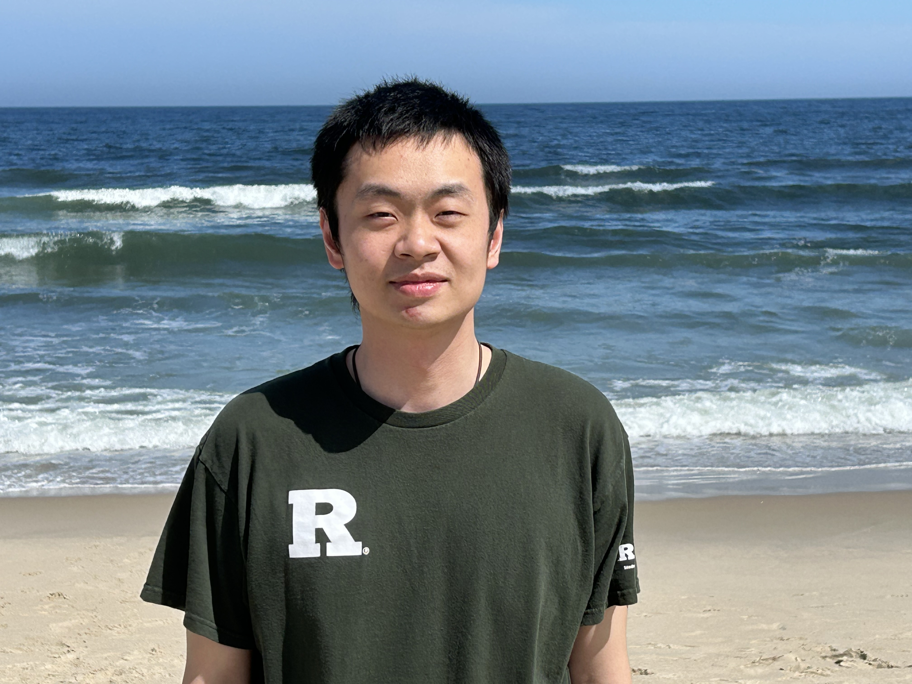

Puheng Wengpw344 AT rutgers DOT edu |
 |
I am a PhD student in the CS Theory Group at Rutgers University, advised by Jie Gao.
I am broadly interested in theoretical computer science.
Previously, I got my MS in Computer Science at Rutgers and received my BEng at the South China University of Technology.